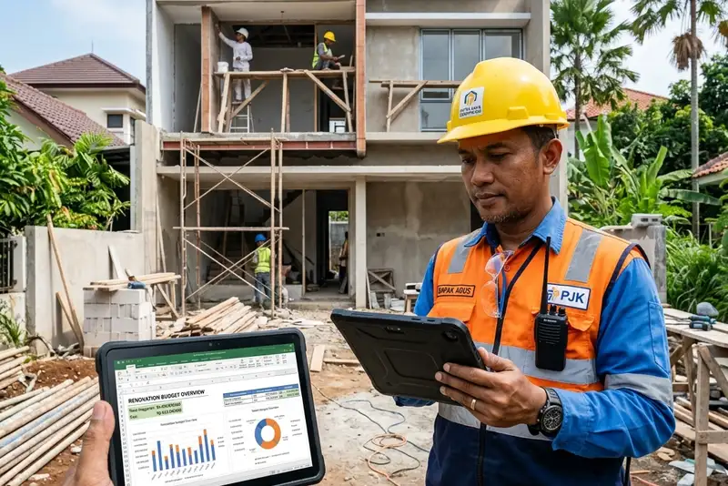

Daftar Isi
- Apa Itu Renovasi Rumah 2 Lantai dan Kenapa Hitungan Biayanya Berbeda?
- Bagaimana Cara Menghitung Biaya Renovasi Rumah 2 Lantai?
- Apa Saja Faktor yang Membuat Biaya Renovasi Rumah 2 Lantai Membengkak?
- Apa Saja Komponen Biaya dalam Renovasi Rumah 2 Lantai?
- Bagaimana Cara Mencegah Dana Renovasi Rumah 2 Lantai Jebol?
- Kapan Waktu yang Tepat untuk Merenovasi Rumah 2 Lantai?
- Kesalahan Umum Saat Menghitung Biaya Renovasi Rumah 2 Lantai
- FAQ
Renovasi rumah 2 lantai membutuhkan hitungan biaya akurat yang mencakup material, upah tukang, struktur, dan biaya tak terduga agar anggaran tidak jebol di tengah proses pengerjaan.
- Biaya renovasi rumah 2 lantai umumnya dihitung berdasarkan luas area yang dikerjakan, bukan luas total rumah.
- Rincian anggaran biaya atau RAB wajib disusun sebelum pekerjaan dimulai, bukan setelah renovasi berjalan.
- Faktor struktur bangunan bertingkat membuat biaya renovasi lantai dua cenderung lebih tinggi dibanding rumah satu lantai.
- Dana cadangan sebesar sekitar 10 hingga 15 persen dari total anggaran perlu disiapkan untuk biaya tak terduga.
- Memilih kontraktor atau tukang yang tepat memengaruhi akurasi hitungan biaya sejak awal proyek.
Apa Itu Renovasi Rumah 2 Lantai dan Kenapa Hitungan Biayanya Berbeda?
Renovasi rumah 2 lantai adalah proses perbaikan, penambahan, atau pengubahan struktur dan tampilan rumah bertingkat yang hitungan biayanya lebih kompleks karena melibatkan faktor struktur, akses kerja, dan keamanan bangunan di ketinggian.
Rumah dua lantai memiliki beban struktur yang berbeda dari rumah satu lantai. Setiap perubahan pada lantai dasar berpotensi memengaruhi kekuatan lantai atas, begitu pula sebaliknya. Karena itu, hitungan biaya renovasi tidak bisa disamakan begitu saja dengan rumah tapak biasa.
Beberapa hal yang membuat renovasi rumah bertingkat berbeda secara biaya antara lain kebutuhan perancah atau steger untuk area lantai dua, biaya mobilisasi material ke atas, serta potensi pekerjaan tambahan pada kolom dan balok struktural. Pemilik rumah yang memahami perbedaan ini sejak awal biasanya lebih siap menyusun anggaran yang realistis.
Untuk siapa informasi ini relevan. Panduan ini ditujukan bagi pemilik rumah dua lantai yang berencana merenovasi sebagian atau seluruh bangunan, baik untuk perluasan ruang, perbaikan struktur, maupun pembaruan tampilan. Panduan ini juga berguna bagi mereka yang sedang membandingkan penawaran dari beberapa kontraktor.
Bagaimana Cara Menghitung Biaya Renovasi Rumah 2 Lantai?
Cara menghitung biaya renovasi rumah 2 lantai dimulai dari menentukan luas area yang direnovasi, lalu mengalikannya dengan estimasi biaya per meter persegi sesuai tingkat pekerjaan, ditambah biaya material, upah, dan dana cadangan.
Langkah-langkah umum yang biasa digunakan dalam menyusun hitungan biaya renovasi adalah sebagai berikut.
- Tentukan ruang lingkup pekerjaan secara spesifik, misalnya renovasi total, renovasi sebagian, atau penambahan lantai.
- Ukur luas area yang benar-benar terdampak pekerjaan, bukan luas seluruh rumah.
- Kelompokkan pekerjaan menjadi kategori struktur, arsitektur, mekanikal elektrikal, dan finishing.
- Buat rincian anggaran biaya atau RAB per kategori dengan bantuan kontraktor atau konsultan.
- Tambahkan dana cadangan sekitar 10 hingga 15 persen dari total estimasi untuk mengantisipasi biaya tak terduga.
Sebagai gambaran umum yang dapat bervariasi tergantung lokasi, spesifikasi material, dan tingkat kesulitan pekerjaan, biaya renovasi rumah bertingkat di banyak wilayah Indonesia sering diperkirakan berada pada kisaran menengah per meter persegi untuk pekerjaan renovasi standar, dan bisa lebih tinggi untuk pekerjaan yang menyentuh struktur bangunan (perkiraan umum praktik industri konstruksi, periode 2025-2026). Angka ini sebaiknya tetap dikonfirmasi ulang melalui survei langsung dan penawaran tertulis dari kontraktor.
Berdasarkan pengamatan umum di sektor konstruksi rumah tinggal, proyek renovasi yang tidak memiliki RAB tertulis sejak awal cenderung lebih sering mengalami pembengkakan biaya dibanding proyek yang disusun dengan rincian anggaran yang jelas (pengamatan umum praktisi konstruksi, periode 2025-2026).
Apa Saja Faktor yang Membuat Biaya Renovasi Rumah 2 Lantai Membengkak?
Biaya renovasi rumah 2 lantai membengkak biasanya disebabkan oleh perubahan desain di tengah pengerjaan, kondisi struktur lama yang ternyata bermasalah, serta pemilihan material yang tidak direncanakan sejak awal.
Beberapa faktor yang paling sering ditemui antara lain sebagai berikut.
- Perubahan permintaan atau desain setelah pekerjaan berjalan, yang disebut change order dalam dunia konstruksi.
- Kondisi struktur eksisting yang ternyata membutuhkan perbaikan tambahan, seperti retak struktural atau pondasi yang lemah.
- Kenaikan harga material selama masa pengerjaan, terutama untuk proyek yang berlangsung dalam waktu lama.
- Kesalahan pengukuran awal yang membuat kebutuhan material dihitung terlalu rendah.
- Tidak adanya dana cadangan sejak awal sehingga biaya tambahan langsung membebani anggaran utama.
Faktor lokasi juga berpengaruh. Rumah yang berada di area dengan akses jalan sempit atau padat penduduk umumnya membutuhkan biaya mobilisasi material yang lebih tinggi, terutama untuk pekerjaan lantai dua yang memerlukan alat bantu tambahan.
Apa Saja Komponen Biaya dalam Renovasi Rumah 2 Lantai?
Komponen biaya renovasi rumah 2 lantai umumnya terdiri dari biaya material, biaya upah tukang, biaya struktur tambahan, biaya mekanikal elektrikal, dan biaya jasa desain atau pengawasan.
Rincian komponen ini penting dipahami agar pemilik rumah tidak hanya fokus pada satu jenis biaya saja.
Material bangunan mencakup bahan pokok seperti bata, semen, besi, kayu, hingga material finishing seperti keramik dan cat. Upah tukang biasanya dihitung berdasarkan sistem harian atau borongan, tergantung kesepakatan dengan kontraktor. Biaya struktur tambahan diperlukan apabila renovasi menyentuh kolom, balok, atau pondasi. Biaya mekanikal elektrikal mencakup instalasi listrik, air, dan sanitasi yang sering terabaikan dalam perhitungan awal. Terakhir, biaya jasa desain atau pengawasan diperlukan terutama untuk renovasi berskala besar agar hasil pekerjaan sesuai rencana.
Bagaimana Cara Mencegah Dana Renovasi Rumah 2 Lantai Jebol?
Cara mencegah dana renovasi jebol adalah dengan menyusun RAB secara rinci, menyiapkan dana cadangan, memilih kontraktor terpercaya, dan menghindari perubahan desain mendadak selama pengerjaan.
Beberapa langkah praktis yang dapat diterapkan meliputi:
- Menyusun RAB detail sebelum pekerjaan dimulai dan menyepakatinya secara tertulis dengan kontraktor.
- Menetapkan skala prioritas pekerjaan apabila anggaran terbatas, misalnya mendahulukan perbaikan struktur sebelum estetika.
- Menyiapkan dana cadangan minimal 10 hingga 15 persen dari total anggaran.
- Melakukan pembayaran bertahap sesuai progres pekerjaan, bukan di muka secara penuh.
- Menghindari perubahan desain besar setelah pekerjaan berjalan tanpa perhitungan ulang biaya.
Disiplin dalam mengikuti RAB yang sudah disusun menjadi kunci utama agar renovasi tetap berada dalam jalur anggaran yang direncanakan.
Kapan Waktu yang Tepat untuk Merenovasi Rumah 2 Lantai?
Waktu yang tepat untuk merenovasi rumah 2 lantai umumnya ditentukan oleh kondisi bangunan, musim, dan kesiapan anggaran, bukan sekadar keinginan sesaat.
Musim kemarau sering dipilih karena risiko gangguan cuaca terhadap pekerjaan struktur dan atap lebih rendah dibanding musim hujan. Selain itu, renovasi sebaiknya dilakukan setelah anggaran benar-benar siap, termasuk dana cadangan, agar proses tidak terhenti di tengah jalan karena kekurangan dana.
Kesalahan Umum Saat Menghitung Biaya Renovasi Rumah 2 Lantai
Kesalahan umum dalam menghitung biaya renovasi rumah 2 lantai antara lain mengabaikan biaya struktur tambahan, tidak menyiapkan dana cadangan, dan hanya mengandalkan estimasi lisan tanpa RAB tertulis.
Kesalahan lain yang sering terjadi adalah membandingkan harga antar kontraktor tanpa menyamakan spesifikasi pekerjaan terlebih dahulu, sehingga perbandingan menjadi tidak setara. Pemilik rumah juga kerap terlambat melibatkan kontraktor atau konsultan pada tahap perencanaan awal, padahal keterlibatan sejak awal dapat membantu mendeteksi potensi biaya tambahan lebih dini.